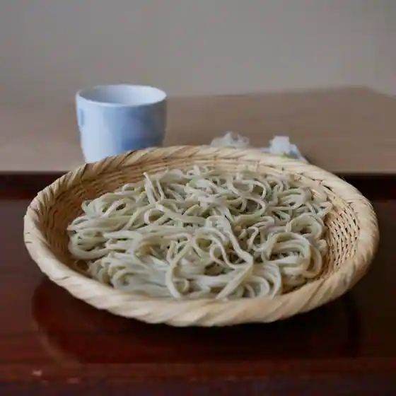

Japan / Ehime / Masaki
Masaki · Ehime
Masaki
Highlighted on the Ehime map.
Masaki Town Hall · Tourism site
No bookable places to stay found in Masaki — nearest options in Iyo.

Sights · Things to do · Places to eat · Places to stay · Day-to-day services
Nearby in Ehime: ← Kumakogen · Matsuno →
Other towns: Ainan · Ikata · Imabari · Iyo · Kamijima · Kihoku · Kumakogen · Matsuno · Matsuyama · Niihama · Ozu · Saijo · Seiyo · Shikokuchuo · Tobe · Toon · Uchiko · Uwajima · Yawatahama
All towns in Ehime · Back to all prefectures